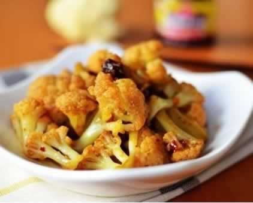
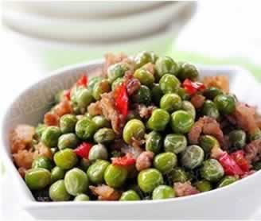

如何吃出胎儿的好视力？
准妈妈的饮食与胎儿的视力发展有密切的关系。怎么吃能对胎儿的眼睛有益呢？
首先建议准妈妈们多吃粗粮，少吃高糖食物。随着生活水平的提高，我们的饮食越来越精细，粗粮正逐渐被细粮和高糖饮食所代替。像饮料、精米、精面等。虽然口感不错，但以精米为例，在加工的过程中，一层层脱壳会导致维生素的流失。另一方面，当人体摄入过多的糖分后，就会造成体内糖分堆积，糖分在体内新陈代谢时需要大量的维生素，因此维生素就会因消耗过大而不足，而眼部视细胞发育需要大量的维生素参与。
许多水果中含有丰富的、对眼睛有益的维生素，建议准妈妈都吃适量的水果。另外，应多吃坚果类食物，像核桃、栗子、松子等，这些坚果中除含有对视网膜有促进作用的亚油酸、亚麻酸外，所含的维生素及钙，锌等矿物质对视力的发育也有直接的影响，能够帮助视细胞的发育。
此外，准妈妈们还可以适量吃油质鱼类，比如鲑鱼、鲭鱼，油质鱼类富含一种构成神经膜的要素DHA，能帮助胎宝宝视力健全发展。但不建议妈妈们吃鱼类罐头食品，最好购买鲜鱼自己烹饪，每个星期至少吃1次鱼。
本周推荐尝试食谱1：
酱香菜花
推荐理由：菜花有开胃消食、化滞消积之功效。
食谱原料：
菜花 200克，蒜、色拉油、拌饭酱各适量。
制作方法：
1、花菜用手掰成小朵，入热水过中焯烫至8成熟。
2、热锅冷油爆香蒜片。
3、加入焯好的花菜和拌饭酱继续翻炒入味就可以啦（因为酱本身有一定的咸度，所以不需要加盐了）。
本周推荐尝试食谱2：
肉末炒豌豆
推荐理由：豌豆营养丰富，有补中益气、利小便的功效，适合孕期食用。
食谱原料：
鲜嫩豌豆100 克，葱、适量姜适量，猪肉50克，盐1克，酱油少许。
制作方法：
1、豌豆洗净，猪肉剁成肉糜，待用。
2、油温热后，放入葱、姜煸炒出香味后，放入肉末，加入一点点酱油煸炒，然后放入豌豆，调味后，用旺火快炒，炒熟即可。
小贴士：每100 克豌豆中，含叶酸82.6 毫克，是蔬菜中叶酸含量较高的品种。旺火快炒有助于减少豌豆中叶酸及其他维生素的损失。